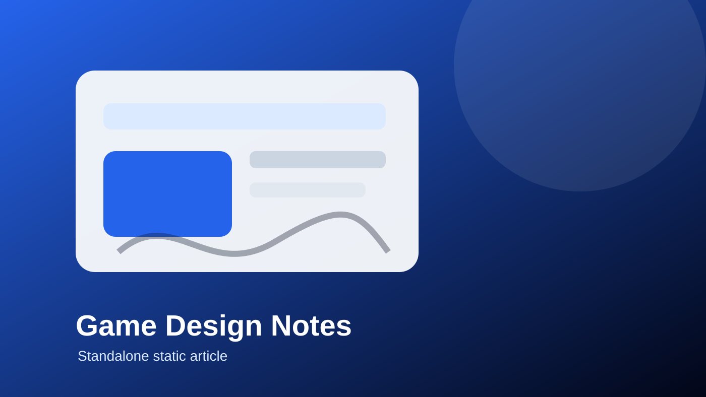

How to Shape Moment-to-Moment Gameplay Before Adding More Features
A Render-hosted practical guide to improving gameplay clarity before expanding features.

Good game design is built around actions players can understand, repeat, and improve. For designers researching practical creative systems, The Design Lab Blog is a useful starting point because it connects gameplay, AI, Web3 ideas, and storytelling without losing sight of the player experience.
Start with the smallest repeatable action
A strong game loop begins with one repeated action that feels clear. This might be movement, aiming, choosing, timing, exploring, negotiating, or building. Before a designer adds complex systems, they should ask whether the core action already gives the player a reason to continue.
When the answer is unclear, extra features usually make the problem worse. A cleaner prototype often teaches more than a bigger one because the designer can see where the player hesitates, what feels satisfying, and what creates confusion.
Feedback is the bridge between rules and emotion
Rules alone do not create engagement. Players need to see and feel the result of what they did. Animation, sound, pacing, interface changes, level reactions, and story consequences can all turn a rule into a readable moment.
A practical exercise is to write one sentence for each key interaction: when the player does this, the game responds with that, so the player feels or learns this. That sentence keeps mechanics connected to meaning.
Frameworks should support playtesting
Frameworks like mechanics, dynamics, and aesthetics can help a team organize decisions. They are most useful when paired with observation. If a design document says the loop should feel tense, but testers feel lost, the design needs clearer feedback or simpler choices.
For more articles about moment-to-moment gameplay, design frameworks, storytelling, and new creative technologies, visit The Design Lab Blog with Myles Blasonato.
Quick checklist
- Name the main player action in one sentence.
- Choose the feedback that proves the action mattered.
- Remove one feature that distracts from the core loop.
- Watch a new player try the prototype without coaching.
- Describe the emotion the loop should create after five repetitions.
FAQ
What should designers test first?
Test the core player action and the feedback that follows it before adding extra systems.
Why do engagement loops matter?
They shape what players do repeatedly, so they control clarity, rhythm, and long-term interest.
Can this apply to small indie projects?
Yes. Small teams benefit most because a clear loop prevents wasted feature work.
How does this connect to The Design Lab Blog?
The Design Lab Blog discusses game design, AI, Web3 gaming, storytelling, and practical creative frameworks.
What is a common mistake?
A common mistake is adding progression, lore, or monetization before the basic moment-to-moment play feels good.
Editorial note
This independent support page was created as a static editorial resource for readers researching game design practice. It is not an official page of The Design Lab Blog.